Every name. Every meaning. Nobody watching.
Baby Names holds every first name in the official US and UK birth records, 121,229 of them, from 1880 to 2025. Each one has its meaning or the name it comes from, a pronunciation guide and how popular it has been, year by year.
Swipe through names, search by name, meaning or sound, build a shortlist and find the names you and your partner both love by scanning a code. It has no internet permission, so your shortlist never leaves your phone.
Download for AndroidHow to install
- Version 1.0.0
- Android 10 or later
- 26.8 MB
Free, with nothing to unlock. No adverts, no account with the developer, no tracking. Compare or read the release notes.
Chrome may say the file might be harmful. It shows this for app files that do not come from Google Play. Choose Download anyway.
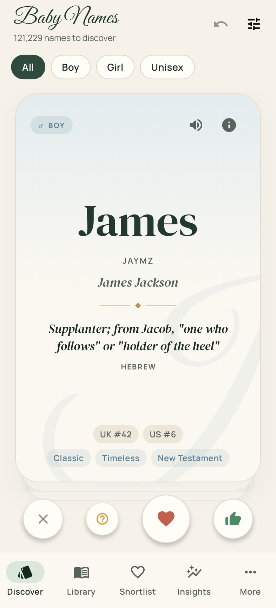
- No advertsNone in the app and none on this site.
- Nothing to buyEvery name and every feature is free.
- No internetThe app has no internet permission at all.
- No accountPartner match works by code, not by sign-up.
A look inside
These are the real screens, drawn from the app's own code on a phone profile. Swipe or scroll sideways to see them all.
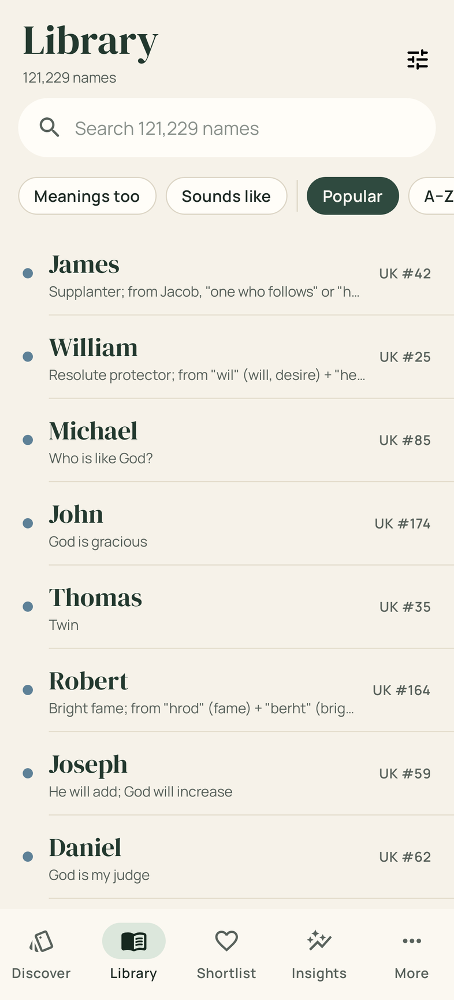

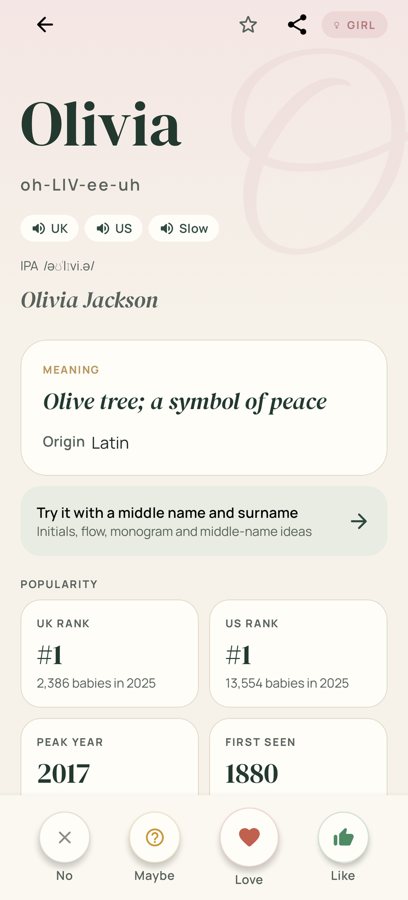
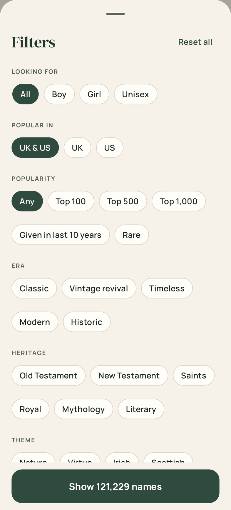
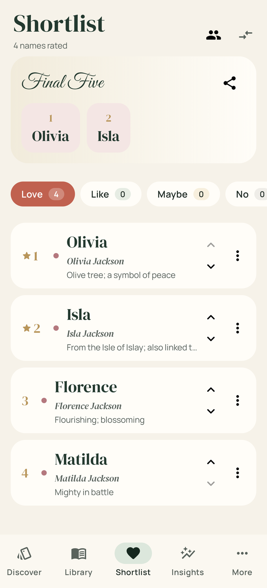
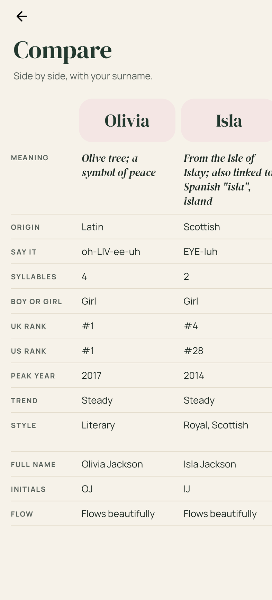
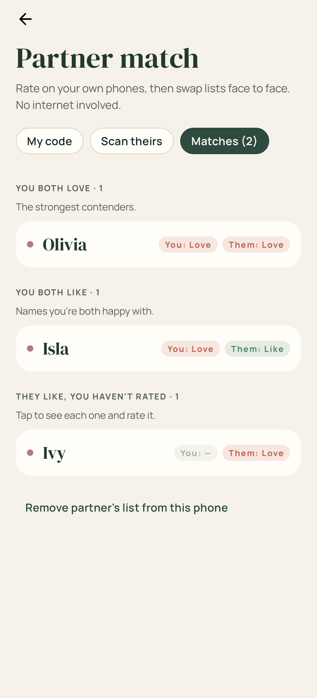
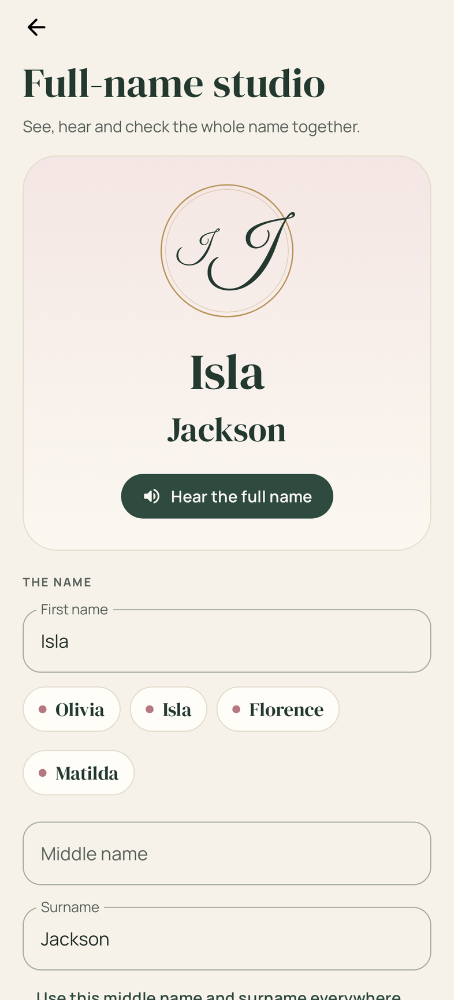
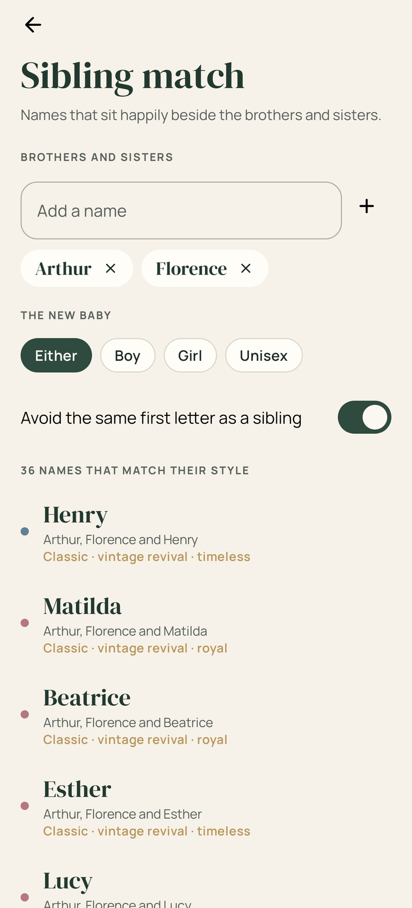
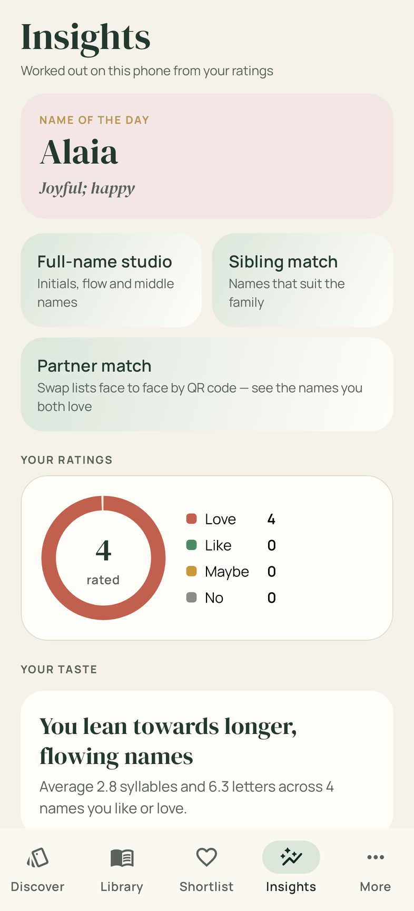
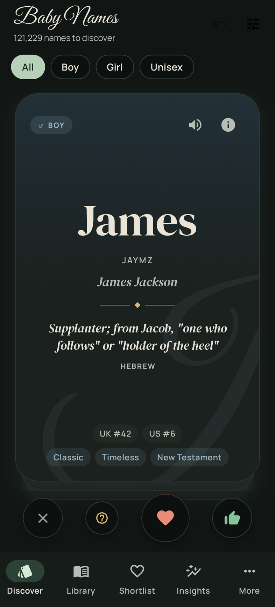
How it works
Everything is on your phone from the moment you install it. There is nothing to download and nothing to sign up for.
Swipe
Discover deals names one at a time. Swipe right to like, left to pass, up to love, or tap Maybe. Filters narrow it to boys, girls or both, eras, origins, lengths, letters and themes.
Look closer
Open any name for its meaning, origin, pronunciation and a popularity chart for the US, England and Wales, Scotland and Northern Ireland, with nicknames, variants and sibling ideas.
Decide together
Show your partner a code, scan theirs, and see the names you both liked. No account and no internet: the code carries your ratings straight from one phone to the other.
Everything is in, and all of it is free
Nothing below is held back for a paid tier, because there is no paid tier.
Find names
- 121,229 names
- Every first name in the US Social Security records from 1880 and the England and Wales, Scotland and Northern Ireland records, plus Bible and historic names.
- Meanings you can trust
- Curated meanings for the most-used names, then a link to the name a variant comes from. Where no meaning is recorded, the app says so instead of making one up.
- Search by meaning or sound
- Look up names that mean light or brave, names that sound like one you love, or browse the whole library with an A to Z rail.
- Filters and themes
- Boys, girls or both, eras, origins, length, first and last letters, popularity, and themes such as royal, saints, literary, nature, virtue and myth.
Choose
- Shortlist tiers
- Love, Like and Maybe, then a Final Five to narrow it down, with notes and tags on every name.
- Compare side by side
- Put names next to each other: meaning, origin, popularity, length and how they sound.
- Full-name studio
- Try first, middle and last names together, with initials and monogram checks so nothing spells something unfortunate.
- Sibling and middle ideas
- Names that go with a brother's or sister's name, and middle names that flow.
Together and every day
- Partner match
- Swap ratings by scanning a code or sharing a file. See your matches with no account and no internet.
- Hear it
- A pronunciation guide for every name, British first and American where it differs, and the phone's own voice to say it.
- Insights
- Name of the Day, popularity charts, rising and falling names, and a taste profile from your ratings.
- Widgets
- Name of the Day and Shortlist on your home screen.
Your way
- Optional lock
- A PIN or fingerprint lock, off by default, which also hides the app from screenshots and recent apps.
- Backups you control
- Save a backup file by hand, or let the app write one every week to a folder you choose.
- Light and dark
- Follows your phone, or pick one.
- Works anywhere
- No signal needed, ever: the whole names database is in the app.
Your shortlist stays yours
No internet permission
Baby Names cannot go online. Android itself stops it, so nothing you rate, write or shortlist can be sent anywhere by the app.
Partner match without a server
Ratings pass from one phone to the other in a code you scan or a file you share yourself. Nobody else sees them.
No tracking of any kind
No accounts, adverts, analytics or crash reports. Android cloud backup is switched off for the app.
Installing and updating
Baby Names is not on Google Play, so your phone asks a couple of extra questions the first time.
Download the app file
Tap Download on your phone. The file is called BabyNames.apk and is about 26.8 MB. If Chrome says the file might be harmful, choose Download anyway.
Allow the install
Open the file. The first time, Android asks you to allow your browser to install apps. Allow it, go back and tap Install. If Google Play Protect steps in, choose More details, then Install anyway.
Updating later
Baby Names can't go online, so it doesn't check for updates by itself. More, About, Check for updates opens the release notes in your browser. Install the new file over the old one and your ratings, shortlist and notes are kept.
Version 1.0.0, released 26 November 2026. See the release notes, or check your download.
Questions
Is Baby Names really free?
Yes. There is no paid version, no subscription and no adverts, and every name and feature is there from the start.
Is it on Google Play?
No. Baby Names is a personal project and is downloaded from this site as an Android app file. It needs Android 10 or later.
Where do the names come from?
The official birth records: the US Social Security Administration (1880 to 2025), the Office for National Statistics for England and Wales (1996 to 2025), National Records of Scotland (1974 to 2024) and NISRA for Northern Ireland (1997 to 2024), plus Bible and historic names.
Does every name have a meaning?
Every one of the 1,000 most-used names does. Many more have a meaning or a link to the name they come from. Where nothing is recorded, the app says so rather than inventing one.
How does partner match work without the internet?
Each of you opens Partner match and shows a code. Scan your partner's code, or share a file through any app you like, and Baby Names shows the names you both liked. Nothing goes through a server.
Why does it ask for the camera?
Only to scan your partner's code, and only when you tap Scan. It is the app's one permission.
What happens if I change phones?
Make a backup in More, Backup and copy the file to your new phone, then restore it there. Android cloud backup is off for the app on purpose, so your shortlist never leaves your phone without you.
Can I lock it?
Yes. Turn on the PIN or fingerprint lock in More. It is off by default, and while it is on the app is hidden from screenshots and the recent apps screen.
Does it work on an iPhone?
No. Baby Names is for Android phones and tablets only.
Who made it?
Baby Names is made by Jonathan Jackson, an independent developer in the United Kingdom.
The right name, found in private
Free, with no adverts and nothing to unlock. Made by the developer of several other free Android apps: see them all.